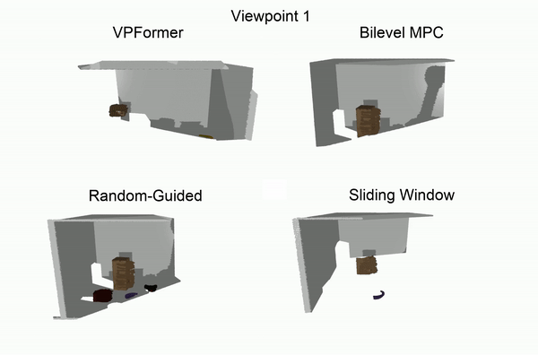

Hanwen RenI am a Ph.D. student in the Department of Computer Science at Purdue University. Currently, I am working as a Research Assistant at Purdue Cognitive Robot Autonomy & Learning (CoRAL) Lab directed by Prof. Ahmed H. Qureshi. Before coming to Purdue, I got my B.S. from the UM-SJTU Joint Institute at Shanghai Jiao Tong University and Sc.M. from the Electrical Sciences & Computer Engineering Department at Brown University. Email: ren221 AT purdue DOT edu |
ResearchMy research focuses on efficient and high-quality robot active visual perception for constrained environments, robot task and motion planning in confined spaces, and robotic systems with human-in-the-loop. |

|
Multi-Stage Monte Carlo Tree Search for Non-Monotone Object Rearrangement Planning in Narrow Confined EnvironmentsHanwen Ren*, Ahmed H. Qureshi Arxiv paper In this work, we propose a Multi-Stage Monte Carlo Tree Search (MS-MCTS) method leveraging an intelligent subgoal-focused tree expansion algorithm to find high-quality plans for complex non-monotone object rearrangement planning problems in confined environments. Our approach results in near-optimal solutions for various object rearrangement instances of diverse difficulty levels. |

|
Neural Rearrangement Planning for Object Retrieval from Confined Spaces Perceivable by Robot's In-hand RGB-D SensorHanwen Ren*, Ahmed H. Qureshi Arxiv This paper presents a neural network-based object retrieval framework that efficiently performs rearrangement planning of unknown, arbitrary objects in confined spaces to retrieve the desired one. Our method demonstrates high performance by ensuring the relocation of non-target objects clear the way for the robot path homotopy to the given target object, thus significantly increasing the underlying motion planner's efficiency. |
|  |
Robot Active Neural Sensing and Planning in Unknwon Cluttered EnvironmentsHanwen Ren*, Ahmed H. Qureshi IEEE Transactions on Robotics 39 (4), 2738-2750 paper In this work, we present the active neural sensing approach that generates the kinematically feasible viewpoint sequences for the robot manipulator with an in-hand camera to gather the number number of observations needed to reconstruct the underlying unknown cluttered environments. Our results exhibit high performance compared to traditional baselines regarding the number of viewpoints, scene coverage success rates, and planning time. |

|
Cograsp: 6-DOF Grasp Generation for Human-Robot CollaborationAbhinav K. Keshari*, Hanwen Ren, Ahmed H. Qureshi IEEE International Conference on Robotics and Automation (ICRA), 2023 paper In this paper, we propose a novel, deep neural network-based method called CoGrasp that enables robots to grasp various objects in a human-aware manner by contextualizing human preference. Our user study indicates that our approach allows safe, natural, and social-aware human-robot co-grasping experience. |